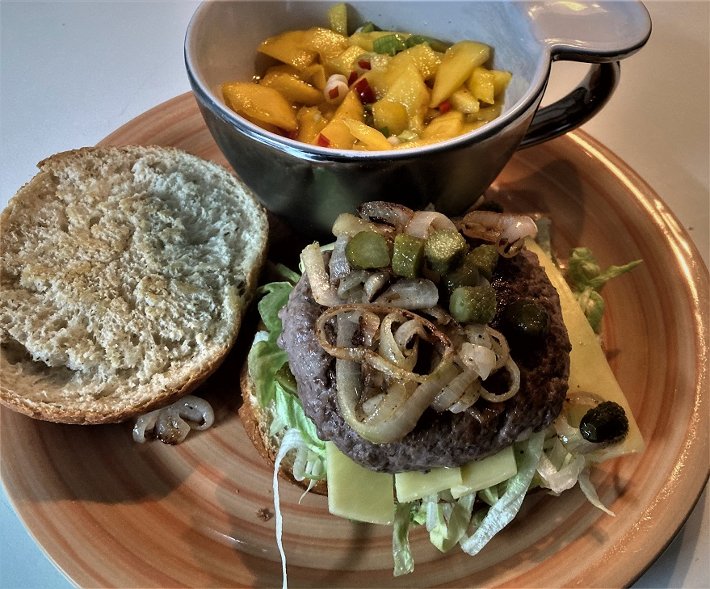

Hamburger met pittige salade
Ingrediënten hamburger
- 350 gram rundergehakt
- 2 (hamburger)broodjes
- roomboter
- ½ eetlepel gladde mosterd
- 1 sjalot
- 1 eetlepel zonnebloemolie
- mayonaise
- peper & zout
Ingrediënten gebakken uien
- 3 uien
- roomboter
- peper & zout
Ingrediënten pittige salade
- 1 mango
- 1 rode peper
- 2 bosuitjes
- ijsbergsla
- 1 eetlepel sweet chilisaus
- 1 eetlepel wittewijnazijn
Bereiding
- Snipper de sjalot en meng het rundergehakt met de gesnipperde sjalot, mosterd peper & zout.
- Vorm twee stevige burgers en bewaar ze in de koelkast.
- Schil de mango en snijd hem in reepjes.
- Snijd de bosuitjes in ringen en snijd de rode peper fijn.
- Meng de mangoreepjes met de bosuiringetjes en de rode peper.
- Meng de sweet chilisaus en de wittewijnazijn door de mango.
- Zet de salade in de koelkast.
- Pel de uien en snijd ze in halve ringen.
- Bak de uien op matig vuur in wat roomboter met een snufje peper & zout tot ze zacht en gekleurd zijn.
- Besprenkel de broodjes met wat zonnebloemolie en bak ze in de oven op de opengesneden kant goudbruin in een minuut of vijf – zes.
- Maak de broodjes op een leuke manier op.
Download